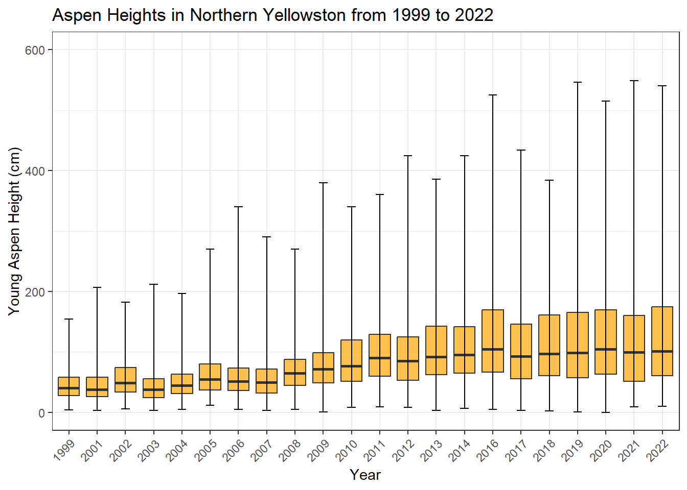
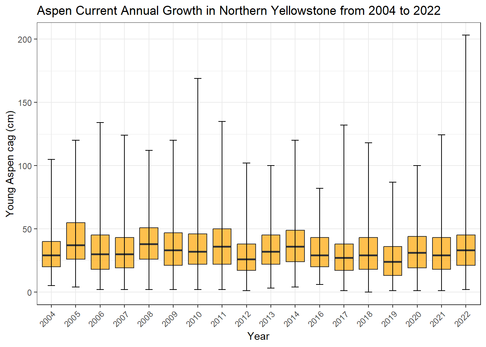
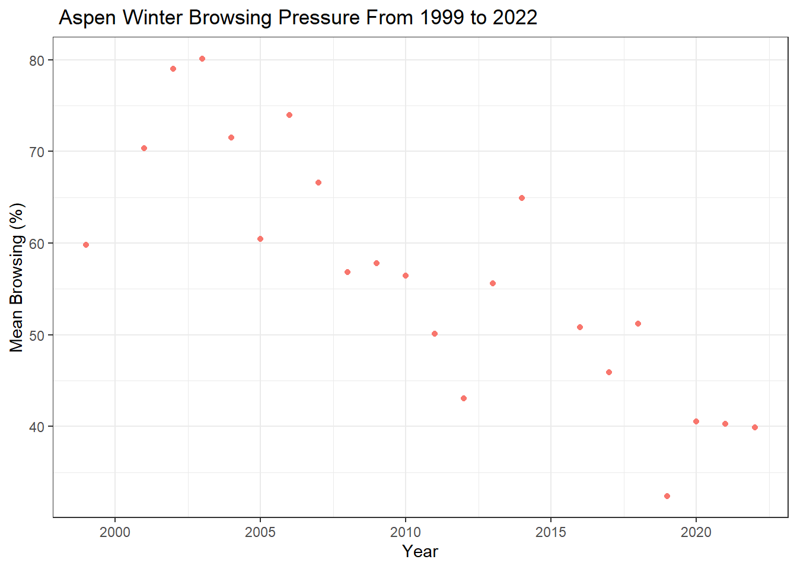

Chapter 4 Graphically exploring my data
4.1 Exploring my data graphically
Here I will create a number of graphs looking at trends in my data through time.
4.1.1 Aspen Height Through Time
library(tidyverse)
young_aspen <- read.csv("young_aspen.csv", header = TRUE)
whisker_data_height <- young_aspen %>%
group_by(year) %>%
summarize(ymin = min(height),
ymax = max(height))
errorbars_height <- young_aspen %>%
left_join(whisker_data_height, by = "year")
ggplot(young_aspen, aes(x = factor(year), y = height)) +
geom_boxplot(outlier.shape = NA, fill = "orange", alpha = 0.7) +
ylim(0,600) +
geom_errorbar(data =errorbars_height, aes(x = factor(year),
ymin = ymin, ymax = ymax),
color = "black", width = 0.3) +
labs(x = "Year", y = "Young Aspen Height (cm)", title = "Aspen Heights in Northern Yellowston from 1999 to 2022") +
theme_bw() +
theme(axis.text.x = element_text(angle = 45, hjust = 1))
This graph shows boxplots for each year side by side. The whiskers represent all of the data, including outliers. This isn’t necesasrly proper, but it was fun to figure out and looks much more aesteically pleasing as there are many upper outliers and the whiskers would not generate the horizontal end lines.
4.1.2 Current Annual Growth Through Time
young_aspen_filtered <- young_aspen %>%
filter(year > 2003) %>%
na.omit(young_aspen_filtered$cag)
whisker_data_cag <- young_aspen_filtered %>%
group_by(year) %>%
summarize(ymin = min(cag),
ymax = max(cag))
errorbars_cag <- young_aspen_filtered %>%
left_join(whisker_data_cag, by = "year")
ggplot(young_aspen_filtered, aes(x = factor(year), y = cag)) +
geom_boxplot(outlier.shape = NA, coef = Inf, fill = "orange", alpha = 0.7) +
geom_errorbar(data = errorbars_cag %>% filter(year > 2003), aes(x = factor(year), ymin = ymin, ymax = ymax),
color = "black", width = 0.3) +
labs(x = "Year", y = "Young Aspen cag (cm)", title = "Aspen Current Annual Growth in Northern Yellowstone from 2004 to 2022") +
theme_bw() +
theme(axis.text.x = element_text(angle = 45, hjust = 1))
Similar graph as above, but depicting cag through time.
4.1.3 Browsing Percent Through Time
young_aspen %>%
group_by(year) %>%
summarize(browsing_percentage = mean(winter_browse)*100) %>%
ggplot(aes(x = year, y = browsing_percentage, color = "orange")) +
geom_point() +
labs(x = "Year",y = "Mean Browsing (%)", title = " Aspen Winter Browsing Pressure From 1999 to 2022") +
theme_bw() +
guides(color = FALSE)
Here we have a graph that show how the percentage of young aspen browsed in each plot has decreased through the years.
4.2 Conclusions
4.2.1 Height
We can see that the mean height of young aspen has increased since the plots were established in 1999. Interestingly, their median height is increasing at a much slower rate than the variance. This is likely a result of the taller young aspen escaping preferred browsing heights, facilitating increased growth as they experience less browsing pressure and have greater access to resources like sunlight. It is curious that it seems like aspen heights have stopped increasing since about 2014. I would have expected heights to continue to increase as browsing pressure decreased.
4.2.2 Current Annual Growth
Cag has stayed relatively the same since we started measuring it in 2004. This result was surprising as I would expect annual growth to increase as browsing pressure decreases. This is a difficult result to understand. It is possible that young aspen are growing at the maximum rate achievable in the northern range, and variation is driven by climatic variables and not browsing. It could also potentially mean that the climatic warming we are seeing has caused current annual growth to slow, yet we are not seeing a decrease as it is buffered by reduced browsing pressure.